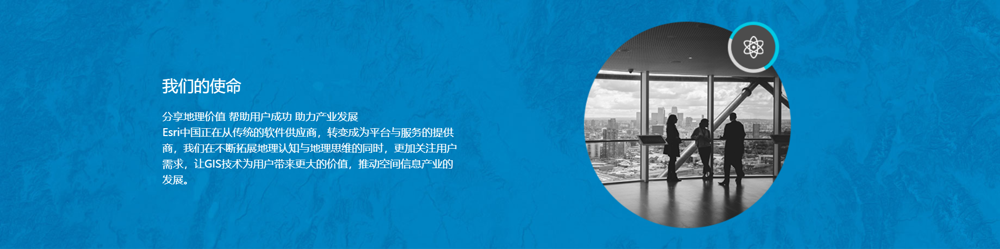
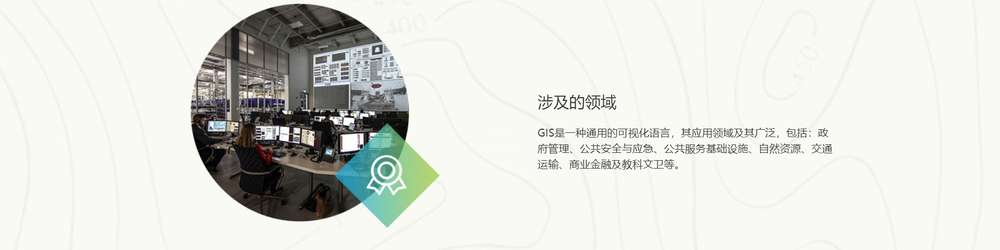
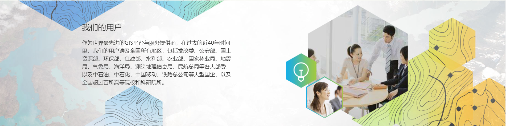
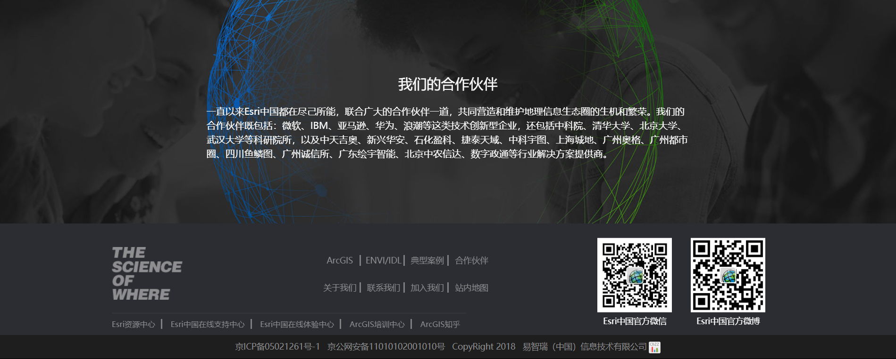

首页
产品技术
行业应用
客户支持
教育培训
下载中心
关于我们
关于我们
Esri中国
Esri
ArcGis培训中心
Esri中国信息技术有限公司（Esri China Information Technology Co. Ltd.，简称：
Esri中国）是Esri公司在中国大陆的唯一分支机构，是具有独立法人资格的独资企业，
目前拥有7家分公司，近100人的高素质服务团队，为客户提供基于地理信息技术的系
统设计咨询、技术支持、教育培训等服务。公司还与“中国科学院国家资源与环境信
息重点试验室”联合建立了“ArcGIS中国培训中心”，并与国内200多家单位和专业
机构建立了合作伙伴业务关系，为用户提供全方位的解决方案。
Esri中国自成立之初就一直致力于推动中国空间信息产业发展，将国外先进的GIS技
术、理念和应用引进国内，帮助用户充分挖掘数据的潜在价值，提升服务能力和水
平，降低成本；同时还积极投身环保、减灾等公益事业，不遗余力地参与中国GIS教
学和科研建设，促进人才的培养和应用水平的提升。
目前，ArcGIS平台软件已成为中国用户群体最大，应用领域最广的GIS平台。今后，
Esri中国将继续为用户的数字化转型和创新发展提供最先进的解决方案，帮助用户用
地图更好地管理业务、辅助决策、创造更美好的未来。 同时，公司还为中国大陆地区
用户提供Exelis公司的 ENVI/IDL遥感图像处理系统和SARscape高级雷达图像处理软
件的销售和技术支持服务，传播和推广遥感技术和应用。



